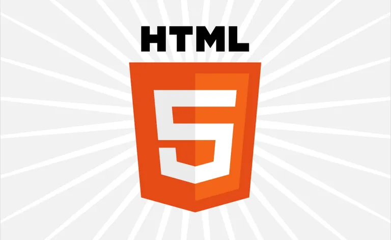

¿Qué es HTML?
HTML (Hypertext Markup Language) es el lenguaje de marcado estándar que se utiliza para crear páginas web. Su principal función es estructurar el contenido en un sitio web, mediante el uso de elementos como encabezados, párrafos, imágenes y enlaces.
¿Qué es CSS?

CSS (Cascading Style Sheets) es el lenguaje de diseño utilizado para definir la presentación visual de un documento HTML. Controla el diseño, los colores, las fuentes, márgenes, y mucho más.
¿Qué es JavaScript?

JavaScript es un lenguaje de programación que permite crear páginas web interactivas y dinámicas. Se usa para manejar el comportamiento de los elementos en respuesta a eventos como clics, desplazamiento, y más.
Licenciatura en Sistemas Computacionales
© 2022 Ángel González Tacías